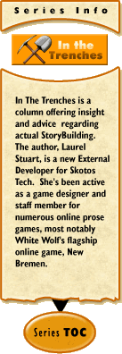

|
In the Trenches #2: Do You Have What You Need?by Laurel Stuart According to the Intro to Storybuilding there are four suggested qualities that every prospective Storybuilder should have in abundance. They are: great ideas, an understanding of the game genre, the technical capacity to use a simple GUI Interface, and time to create and sustain your game. In the past month, I've discovered a few more essentials that I would add to the list. I want to address the original list in reverse order because I think each is a topic that needs further presentation, and in doing so, I will integrate in the discoveries I've made so far about essential Storybuilder qualities — the ones I had, and the ones I'm rapidly developing out of necessity. 1. TimeBuilding sounds easy. The actual process isn't complicated and the Skotos crew is constantly improving and refining it. The foundation they are creating now will enable future Builders to create Chat Theatres with a minimal amount of coding required, and that coding required for more complicated functions most likely unique to a specific game. However, while the Storybuilding process isn't complicated it is time-consuming- and that part won't change. Shannon has been provided some wonderful articles on the "Building Blocks" of an online game in his column, Trials, Triumphs and Trivialities which I would classify as essential Storybuilder reading. The new Storybuilder will be committing to massive writing/typing/inserting; a point that I want to stress. It's as hard as writing a novel in some ways and requires the same dedication to consistent work, day after day. The good news is that Storybuilders don't have to have the writing skills of Pulitzer Prize winners, or jump through the hoops it takes to get a book publisher to even read a manuscript these days. The best way to investigate the quality and style of the descriptive writing is to "examine" rooms and objects in the existing games. If you can be as creative as that about furniture, clothing, and other props, and are willing to devote at least 8-10 hours a week during the Building process to writing up descriptions and inputting them into the Interface, you should be fine. Be warned: writing multiple descriptions for fairly mundane objects can get boring, and the technical process of imputing descriptions into the GUI Interface even more so. The important thing is that you keep doing it, day after day and week after week. {This is where the author preaches what she needs to practice, in hopes of inspiring better productivity for not only future Builders, but herself. Don't let yourself be led astray by the temptations of procrastination like the old woman herself, young apprentices.} All the time in the world won't help if you let yourself get pulled off track by distractions once the novelty wears off. So make sure you have time: solid, consistent, well-managed time, to devote to your game. Helpful Hint Prospective Storybuilders can practice keeping a daily Game journal now long before they make a game proposal. Create descriptions of people, places, and things that you see. Experiment with writing multiple descriptions for the exact same object, varying the length from one sentence to two-three sentences to a colorful paragraph. Just look around your living room and office or bedroom and choose objects or pieces of furniture to write descriptions for. Come up with a list of short adjectives that describe the object, and practice writing brief descriptions on just that element. Do this every day for two weeks. If you find yourself "skipping" days or feeling like you don't have the time or enthusiasm to keep at it for fourteen days, actual Storybuilding will be enormously frustrating for you. All the crafting of game systems and settings won't do you any good if you falter and balk at being able write descriptions for multiple items of clothing, furniture and other furnishings. This was the first important lesson I learned as a Storybuilder, and something I can't stress enough. 2. Technical SkillsOne of the first things I discovered when starting to build my game, Devils Cay, is that I needed to create some of my own web graphics. This requires a program like Photoshop, or in my case, Paint Shop Pro, and a little artistic creativity. A lot can be done by manipulating copyright free graphics; I personally pay a small monthly membership fee to ArtToday, a site that allows the commercial use of clip art and photographs for both online and standard "paper" publishing. I utilize it for Devils Cay at this juncture even though I intend to eventually have a professional graphic artist friend do the final graphic designs. If one isn't a graphic artist, it's a good idea to speak to a friend or relative who is. You'll need someone who would be willing to volunteer about 10-20 hours worth of work making all the graphics for your game. They will need to follow precise directions regarding size and format (jpg, gif, transparent, etc.,). I'll discuss graphic design in a future article. Beyond some artistic skill, basic knowledge of HTML and XML is important. Since the Storybuilding Toolkit is still being refined and improved, the more you know about coding the better, because that will help you ask experienced Builders and Coders relevant questions {and understand their answers}. Even if you won't be doing any coding personally, it's advantageous to be able to communicate with StoryCoders regarding what they can and can't code, and how Chat Theatres work from an engineering perspective. For Devils Cay, I've gone ahead and partnered up with a StoryCoder. I also ask a lot of questions, read forums and save email conversations between StoryCoders, even conversations that don't directly relate to me. I'm learning the "language" of StoryCoding through gradual mental osmosis. It's not easy. Fortunately, Skotos has some of the most friendly and patient coders and employees in the business. I hope that the Skotos Tech Forum will expand and become a valuable resource for future Storybuilders after the dev tools are polished and more individuals are invited to start their Storybuilding projects. From a Builder's perspective, its important to know the limitations of the technology and the time-energy code changes will require so that the game you envision can work in a smooth and stable fashion with the game environment. 3. Understanding of the Game GenreThis is a subtle but essential skill. As an experiment, I made a search using Google for "text-dominant multiplayer interactive fiction". Every site related directly or indirectly to Skotos. {Try it for yourself; there are some very interesting reviews and articles out there.} However, if I had simply been researching Interactive Fiction or text MMORPG web sites, it would have been a different story; they are in abundance. Skotos is offering games that are unique and yet part of a much bigger industry. For a Builder, it's important to have a sense of what existing text-dominant games, MMORPGs and Interactive Fiction all offer and what separates one from the other in common Internet terminology. Playing one game for years isn't enough of a feel for the possibilities that are out there. Beyond just knowing the genre, as a Storybuilder you need to know what other players like and most importantly, how players play online. Skotos has an exceptional collection of articles on the text-dominant games and text-dominant role-playing. Other sites that I recommend include Gamasutra {free registration required; intended for professional game design and development and packed with interesting and relevant articles on both graphic and text games}, Brass Lantern {especially for adventure games} and XYZZY News. A little research at the beginning into what players want from text-dominant games, and why they want it can save a lot of heartache later. Making the game itself will be a challenge; makinga game that people want to play is the actual goal and something every Builder needs to constantly keep in the back of their mind. 4. Great IdeasText-dominant role-playing game settings and genres are really only limited by a Storybuilder's imagination. Fantasy and horror have proven themselves to be consistent bestsellers, but there is also a lot of competition out there within these broad categories. What can Storybuilders create that will be exciting and different and yet have mass appeal? Again, a little market research is required. Talking to players and reading forums on different web sites is an excellent way to get a sense of what players like, what they hate, and what they've always wanted to play. The need for a specific size player base will depend upon the type of Chat Theatre you are designing. What can new Storybuilders offer in terms of location, environment, historical relevance, theme, tone, mood, CNPCs? A game will need all of these different factors crafted together with enough internal consistency for players to feel comfortable making characters and creating group adventures together, right away. Helpful Hint Go into a book or game story and look at what pencil-and-paper games have captured extensive interest. In particular, study the classics. Games like Shadowrun, Call of Cthulu, Ravenloft, Vampire the Masquerade and AD&D have kept enough player interest to stay on the market, year after year. By the same token, research what MUDs have been around for more than four or five years and talk to veteran players from those MUDs about what has kept their interest. Take notes. There is no such thing as too many notes regarding game design and player expectation when you are a prospective Storybuilder. Conclusion There's a lot of interesting and helpful research that can be done before writing a Storybuilding proposal. Take advantage of the time you have now, as the Storybuilding tools are being completed, to develop the core qualities that will make you an excellent Storybuilder. You'll have the knowledge base to create an eye-catching proposal when it comes time and then move quickly into the engineering process. Sometimes, Storybuilding might get boring or tedious, especially when creating the actual foundation. This has to be worked through before the next, more exciting component can be added to the Building process — and things will get exciting again. My next article is going to return to the topic of writing room and prop details with specific examples. I will also reveal strategies I developed to become a habitual description writer, thereby uncomplicating the Storybuilding process enormously. Until then, keep turning dreams into designs all on your own.
|